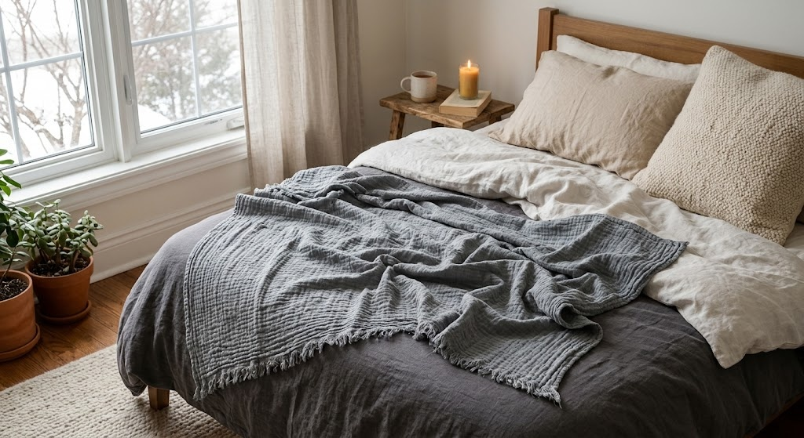

A Made-in-Japan cotton gauze blanket, built from 8 breathable layers instead of one dense one - light enough for every season, warm enough to layer for winter.

Air moves between layers instead of trapping heat like a dense blanket.
The texture improves with use, not wears out.
Crafted by a limited number of specialty gauze-weaving mills.
Use alone in summer, or layer it for winter warmth.
This style of gauze blanket is woven in multiple thin layers rather than one thick one - a traditional Japanese textile technique that only a small number of specialty mills still produce.
The layered structure is what gives it that lived-in, slightly wrinkled softness, and why it keeps improving with every wash instead of flattening out like a conventional blanket.
Add it over a regular blanket for extra warmth.
Light enough to use alone outside of winter too.
A genuinely different texture than a typical throw.
It's often layered with another blanket for winter use - check the listing for sizing and warmth notes.
Check the current listing for care and washing instructions.
Several muted tones are available - check the current listing.
A Made-in-Japan 8-layer cotton gauze blanket - see current pricing and availability on Amazon.
Check Price on Amazon →